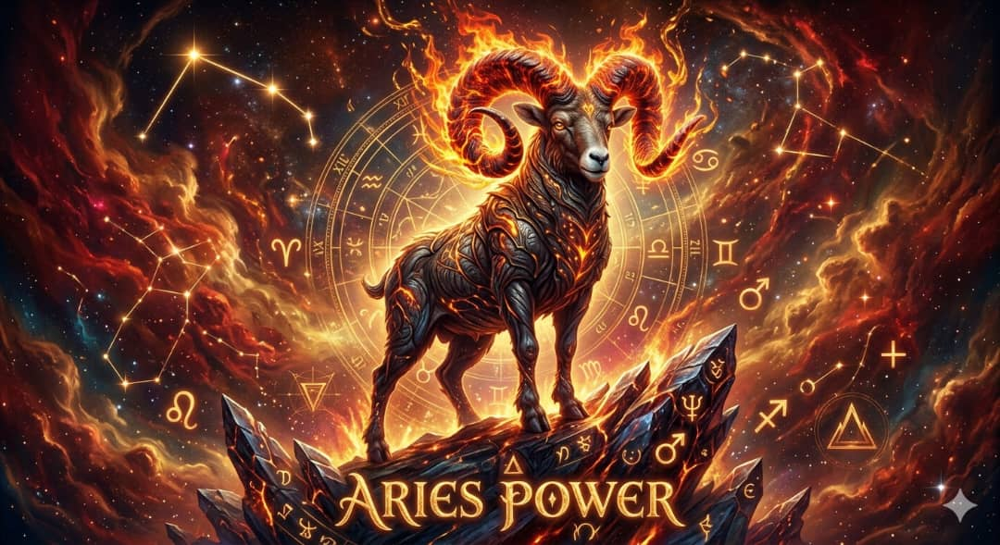

Sirrin Mutanen Da Aka Haifa Tsakanin 21 Ga Maris Zuwa 19 Ga Afrilu

Alamar Rago - Alamar Karfi da Jarumta
Burujin Himlu (wanda a Larabci ake kiran sa da Hamal) shine buruji na farko a cikin jerin burujai 12. Masu wannan burujin mutane ne masu matukar karfin gwiwa, jarumta, shugabanci, da kuma gaggawa a cikin al'amuransu. Wannan darasin zai bayyana maka dukkanin sirrin da ya shafi wannan burujin domin samun nasara a rayuwa.
Dabi'ar wuta tana sa mai burujin Himlu ya zama mai zafin nama, saurin fushi, amma kuma mai saurin hucewa. Suna da kuzari sosai kuma basa son lalaci.
Tauraron Murik shine tauraron yaki da karfe. Wannan ne dalilin da yasa masu Himlu basa tsoron fuskantar kalubale, kuma kullum suna son su zama a kan gaba wajen jagoranci.
Ranar sa'ar masu burujin Himlu ita ce ranar Talata.
Dalili: A ilimin Falaki, ranar Talata tana karkashin ikon tauraron Murik ne. Idan mai burujin Himlu zai fara wani muhimmin aiki, ko kasuwanci, ko tafiya, ko rokon bukata a wajen Allah, yin hakan a ranar Talata yana kawo saurin biyan bukata da nasara fiye da kowace rana.
Kasancewar tauraron Murik yana mulkin "Karfe da Karfi", sana'o'in da suke kawo wa mai Himlu arziki sune wadanda suke bukatar karfin jiki, gaggawa, lissafi, ko amfani da karfe da wuta. Ga guda 10 daga ciki:
Abubuwa masu zafi, ko masu kalar ja, ko kayan karfe. Misali:
Dalili: Domin sanyaya zafin dabi'ar wuta dake tattare dashi, wanda hakan ke bude masa kofofin arziki.
Turarukan da suke kawo farin jini da nasara ga masu Himlu sune masu zafin kamshi (Spicy/Woody):
1. Ismullahil A'azam nashi:
Ya kamata mai Himlu ya lazimci kiran Allah da sunayen nan masu karfi: "YA QAHHARU, YA JABBARU, YA QAWIYYU". Saboda tauraronsu na karfi ne, wadannan sunayen zasu kare su daga makiya da mahassada.
2. Kariya daga idon mutane:
Kasancewar suna da saurin samun cigaba, suna yawan fuskantar hassada. Ya zama dole su rika karanta Ayatul Kursiyyi da Falaki da Nasi kullum safe da yamma.
💡 Shawara Mafi Muhimmanci:
Sirrin rugujewar masu Himlu shine GAGGAAWA da FUSHI. Suna yanke hukunci cikin fushi wanda suke dana-sani daga baya. Idan mai Himlu ya koyi HAKURI kuma ya daina gaggawa wajen yanke shawara, babu abin da zai hana shi zama biloniya ko babban shugaba a rayuwarsa!
Kada ka bari a baka labari! Yanzu zaka iya yin dukkanin lissafin Taurari, tsara gidajen Ramli, da fitar da hukunci a cikin SAKAN DAYA ta amfani da wayarka.